Rancher Deployment
Deploy and Manage SUSE® Security through Rancher Extensions or Apps & Marketplace
SUSE® Security is able to be deployed easily either through Rancher Extensions for Prime customers, or Rancher Apps and Marketplace. The default (Helm-based) SUSE® Security deployment will deploy SUSE® Security containers into the cattle-neuvector-system namespace.
|
Only SUSE® Security deployments through Rancher Extensions (SUSE® Security) of Rancher version 2.7.0+, or Apps & Marketplace of Rancher version 2.6.5+ can be managed directly (single sign on to SUSE® Security console) through Rancher. If adding clusters to Rancher with SUSE® Security already deployed, or where SUSE® Security has been deployed directly onto the cluster, these clusters will not be enabled for SSO integration. |
SUSE® Security UI Extension for Rancher
Rancher Prime customers are able to easily deploy SUSE® Security and the SUSE® Security UI Extension for Rancher. This will enable Prime users to monitor and manage certain SUSE® Security functions and events directly through the Rancher UI. For community users, please see the Deploy SUSE® Security section below to deploy from Rancher Apps and Marketplace.
-
The first step is to enable the Rancher Extensions capability globally if it is not already enabled.
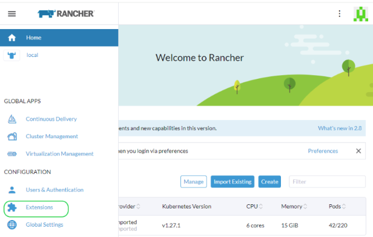
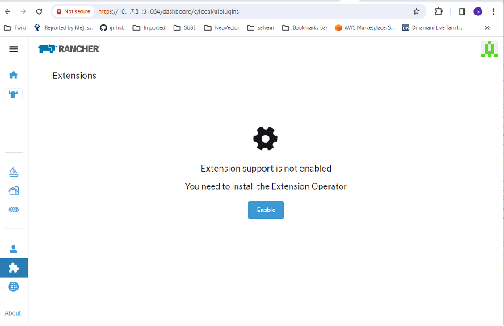
-
Install the SUSE® Security-UI-Ext from the Available list

-
Reload the extension once installation is completed
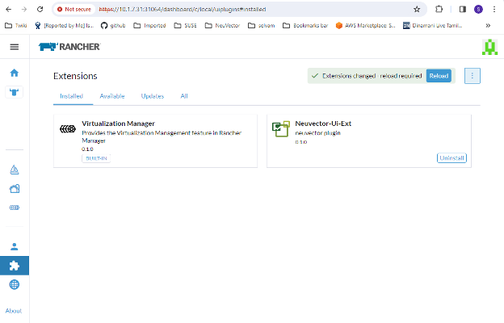
-
On your selected cluster, install the SUSE® Security application from the SUSE® Security tab if the SUSE® Security app is not already installed. This should take you to the App installation steps. For more details on this installation process, see the Deploy SUSE® Security section below.

-
The SUSE® Security dashboard should now be shown from the SUSE® Security menu for that cluster. From this dashboard, a summary of the security health of the cluster can be monitored. There are interactive elements in the dashboard, such as invoking a wizard to Improve Your (Security Risk) Score, including being able to turn on automated scanning for vulnerabilities if it is not enabled.
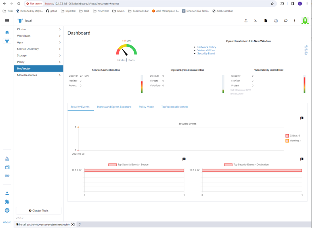
In addition, the links in the upper right of the dashboard provide convenient single sign on (SSO) links to the full SUSE® Security console for more detailed analysis and configuration.
-
To uninstall the extension, go back to the Extensions page
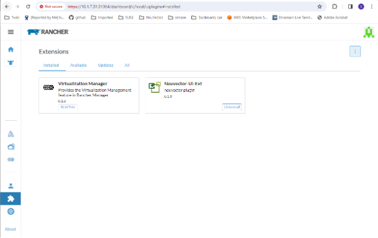
Uninstalling the SUSE® Security UI extension will NOT uninstall the SUSE® Security app from each cluster. The SUSE® Security menu will revert to providing an SSO link into the SUSE® Security console.
Deploy SUSE® Security
First, find the SUSE® Security chart in Rancher charts, select it and review the instructions and various configuration values. (Optional) Create a project to deploy into if desired, e.g. SUSE® Security. Note: If you see more than one SUSE® Security chart, don’t select the one that is for upgrading legacy SUSE® Security 4.x Helm chart deployments.
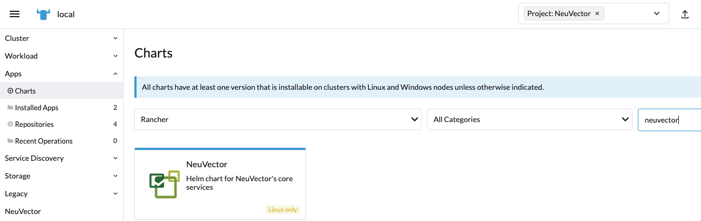
Deploy the SUSE® Security chart, first configuring appropriate values for a Rancher deployment, such as:
-
Container run-time, e.g. docker for RKE and containerd for RKE2, or select the K3s value if using K3s.
-
Manager service type: change to LoadBalancer if available on public cloud deployments. If access is only desired through Rancher, any allowed value will work here. See the Important note below about changing the default admin password in SUSE® Security.
-
Indicate if this cluster will be either a multi-cluster federated Primary, or remote (or select both if either option is desired).
-
Persistent volume for configuration backups

Click 'Install' after you have reviewed and updated any chart values.
After successful SUSE® Security deployment, you will see a summary of the deployments, daemon sets, and cron job for SUSE® Security. You will also be able to see the services deployed in the Services Discovery menu on the left.
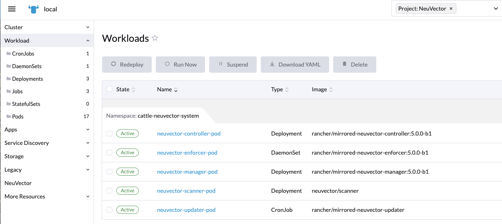
Manage SUSE® Security
You will now see a SUSE® Security menu item in the left, and selecting that will show a SUSE® Security tile/button, which when clicked will take you to the SUSE® Security console, in a new tab.
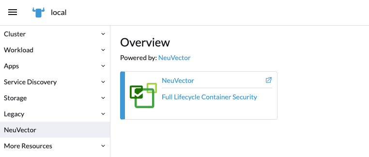
When this Single Sign On (SSO) access method is used for the first time, a corresponding user in the SUSE® Security cluster is created for the Rancher user login. The same user name of the Rancher logged in user will be created in SUSE® Security, with a role of either admin or fedAdmin, and Identity provider as Rancher.
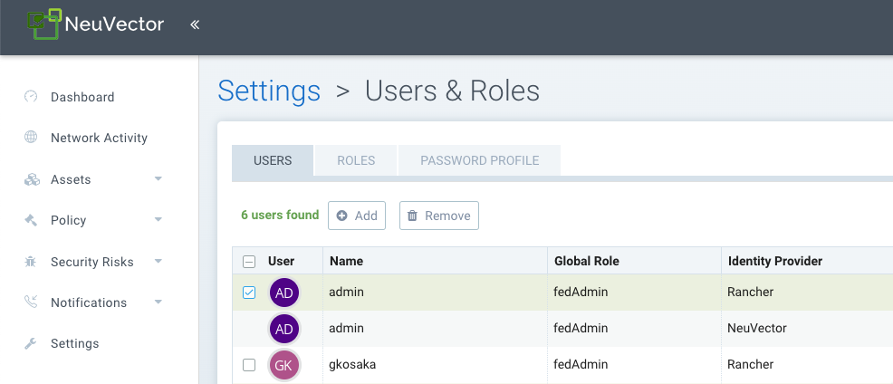
Note in the above screen shot, two Rancher users admin and gkosaka have been automatically created for SSO. If another user is create manually in SUSE® Security, the Identity provider would be listed as SUSE® Security, as shown below. This local user can login directly to the SUSE® Security console without going through Rancher.
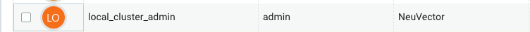
|
It is recommended to login directly to the SUSE® Security console as admin/admin to manually change the admin password to a strong password. This will only change the SUSE® Security identity provider admin user password (you may see another admin user whose identify provider is Rancher). Alternatively, include a ConfigMap as a secret in the initial deployment from Rancher (see chart values for ConfigMap settings) to set the default admin password to a strong password. |
Disabling SUSE® Security/Rancher SSO
To disable the ability to login to SUSE® Security from Rancher Manager, go to Settings → Configuration.
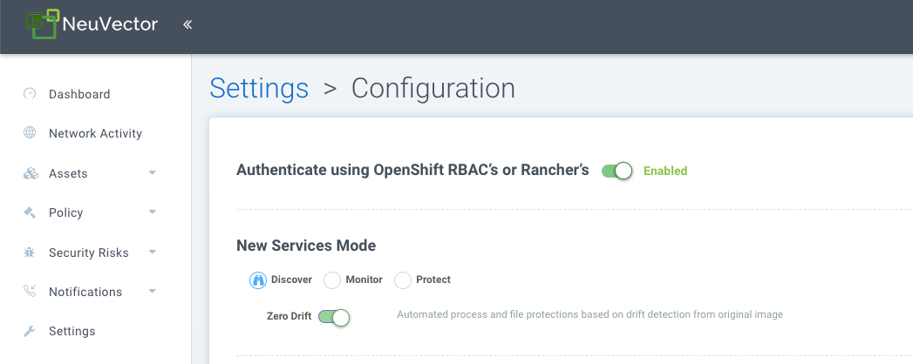
Rancher Legacy Deployments
The sample file will deploy one manager and 3 controllers. It will deploy an enforcer on every node. See the bottom section for specifying dedicated manager or controller nodes using node labels. Note: It is not recommended to deploy (scale) more than one manager behind a load balancer due to potential session state issues.
|
Deployment on Rancher 2.x/Kubernetes should follow the Kubernetes reference section and/or Helm based deployment. |
-
Deploy the catalog docker-compose-dist.yml, controllers will be deployed on the labelled nodes, enforcers will be deployed on the rest of nodes. (The sample file can be modified so that enforcers are only deployed to the specified nodes.)
-
Pick one of controllers for the manager to connect to. Modify the manager’s catalog file docker-compose-manager.yml, set CTRL_SERVER_IP to the controller’s IP, then deploy the manager catalog.
Here are the sample compose files. If you wish to only deploy one or two of the components just use that section of the file.
Rancher Manager/Controller/Enforcer Compose Sample File:
manager:
scale: 1
image: neuvector/manager
restart: always
environment:
- CTRL_SERVER_IP=controller
ports:
- 8443:8443
controller:
scale: 3
image: neuvector/controller
restart: always
privileged: true
environment:
- CLUSTER_JOIN_ADDR=controller
volumes:
- /var/run/docker.sock:/var/run/docker.sock
- /proc:/host/proc:ro
- /sys/fs/cgroup:/host/cgroup:ro
- /var/neuvector:/var/neuvector
enforcer:
image: neuvector/enforcer
pid: host
restart: always
privileged: true
environment:
- CLUSTER_JOIN_ADDR=controller
volumes:
- /lib/modules:/lib/modules
- /var/run/docker.sock:/var/run/docker.sock
- /proc:/host/proc:ro
- /sys/fs/cgroup/:/host/cgroup/:ro
labels:
io.rancher.scheduler.global: trueDeploy Without Privileged Mode
On some systems, deployment without using privileged mode is supported. These systems must support the ability to add capabilities using the cap_add setting and to set the apparmor profile.
See the sections on deployment with Docker-Compose, Docker UCP/Datacenter for sample compose files.
Here is a sample Rancher compose file for deployment without privileged mode:
manager:
scale: 1
image: neuvector/manager
restart: always
environment:
- CTRL_SERVER_IP=controller
ports:
- 8443:8443
controller:
scale: 3
image: neuvector/controller
pid: host
restart: always
cap_add:
- SYS_ADMIN
- NET_ADMIN
- SYS_PTRACE
security_opt:
- apparmor=unconfined
- seccomp=unconfined
- label=disable
environment:
- CLUSTER_JOIN_ADDR=controller
volumes:
- /var/run/docker.sock:/var/run/docker.sock
- /proc:/host/proc:ro
- /sys/fs/cgroup:/host/cgroup:ro
- /var/neuvector:/var/neuvector
enforcer:
image: neuvector/enforcer
pid: host
restart: always
cap_add:
- SYS_ADMIN
- NET_ADMIN
- SYS_PTRACE
- IPC_LOCK
security_opt:
- apparmor=unconfined
- seccomp=unconfined
- label=disable
environment:
- CLUSTER_JOIN_ADDR=controller
volumes:
- /lib/modules:/lib/modules
- /var/run/docker.sock:/var/run/docker.sock
- /proc:/host/proc:ro
- /sys/fs/cgroup/:/host/cgroup/:ro
labels:
io.rancher.scheduler.global: trueUsing Node Labels for Manager and Controller Nodes
To control which nodes the Manager and Controller are deployed on, label each node. Pick the nodes where the controllers are to be deployed. Label them with "nvcontroller=true". (With the current sample file, no more than one controller can run on the same node.).
For the manager node, label it “nvmanager=true”.
Add labels in the yaml file. For example for the manager:
labels:
io.rancher.scheduler.global: true
io.rancher.scheduler.affinity:host_label: "nvmanager=true"For the controller:
labels:
io.rancher.scheduler.global: true
io.rancher.scheduler.affinity:host_label: "nvcontroller=true"For the enforcer, to prevent it from running on a controller node (if desired):
labels:
io.rancher.scheduler.global: true
io.rancher.scheduler.affinity:host_label_ne: "nvcontroller=true"